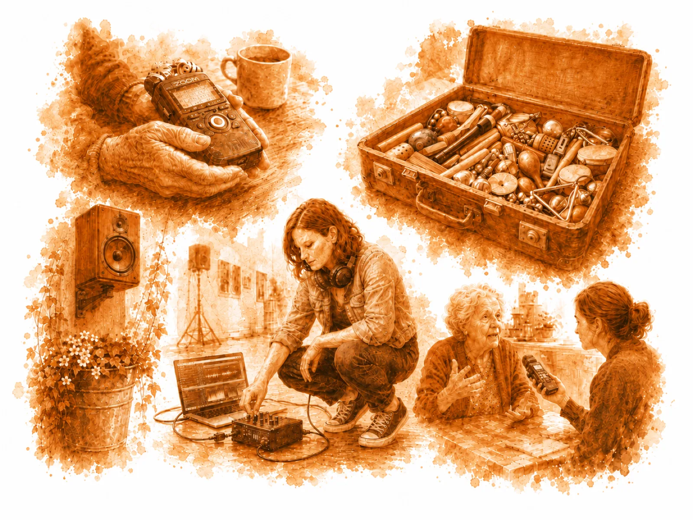

02 — Collective Sound Lab
Workshops
& PROJEKTE.
Buchbare Klangprojekte für Schulen, Träger, Teams und Ausstellungen. Als Projekttag, Workshop oder Projektwoche. Am Ende steht immer ein hörbares Ergebnis.

Ablauf
Vom Briefing zum fertigen Audio.
Jedes Projekt folgt einem klaren Ablauf, angepasst an Gruppe, Ort und Zielsetzung.
01
Briefing
Kurzes Gespräch zu Kontext, Gruppe und Ziel. So wird früh klar, worauf das Format hinausläuft.
02
Session Plan
Ablauf, Rollen und Timing werden passend zu Altersstufe, Ort und Rahmen entwickelt.
03
Durchfuehrung
Die Aufnahme entsteht mit der Gruppe vor Ort, konzentriert und ohne unnötigen Perfektionsdruck.
04
Ergebnis
Postproduktion und Finalisierung. Am Ende steht eine fertige Audiodatei – etwas, das du mitnimmst und das bleibt.
Partizipatorische Projekte
Was du buchen kannst.
Neun Klangformate, einzeln oder als Reihe umsetzbar. Zielgruppe, Ort, Dauer und Ergebnis werden jeweils passend entwickelt.
Mobil & niedrigschwellig
Klangkoffer mobil
Ein sofort einsetzbares Audio-Format für Grundschule, Ganztag und offene Gruppen. Ein spielerischer Einstieg in Hören, Aufnehmen und gemeinsames Gestalten.
Wahrnehmung
Stadt hoeren
Soundwalk, Feldaufnahme, Hörkarte. Eine Gruppe erkundet einen Ort über Geräusche, Stimmen und Atmosphären und entwickelt daraus ein eigenes Hörstück.
Sprache & Audio
Hoerspielwerkstatt
Schreiben, sprechen, inszenieren. Aus Texten, Rollen und Geräuschen entsteht ein gemeinsames Hörspiel oder eine kurze Audio-Szene.
Podcast
Podcast-Studio-Tag
Ein Thema, eine Folge, ein klarer Output. Recherche, Gespräch, Moderation und Schnitt führen in kurzer Zeit zu einer fertigen Episode.
Text & Rhythmus
Text & Beat Studio
Sprache trifft Rhythmus. Texte, Spoken Word, Rap oder kurze Performances werden aufgenommen, geformt und als kompakte Produktion umgesetzt.
Stadt & Beteiligung
Stimmen der Stadt
Interviews, O-Töne und Perspektiven aus einem Umfeld. Das Modul sammelt Stimmen und verdichtet sie zu einem gemeinsamen Stadt- oder Nachbarschaftsporträt.
Erinnerung
Erinnerungsarchiv
Gespräche festhalten, biografische Spuren hörbar machen. Für Generationenprojekte, lokale Geschichte und dokumentarische Formate mit Haltung.
Team & Zusammenarbeit
Team-Audio-Session
Ein gemeinsames Audio-Format für Gruppen, Kollegien oder Teams. Austausch, Rollenklärung und Zusammenarbeit werden in ein konkretes Ergebnis übersetzt.
Ausstellung & Raum
Klang fuer Raum und Ausstellung
Audio für Ausstellung, Installation oder Ort. Stimmen, Flächen, Field Recordings oder Kompositionen werden so entwickelt, dass Klang räumlich und inhaltlich trägt.
Du hast gerade 9 Formate gesehen, lass uns gemeinsam herausfinden, was zu deinem Projekt passt.
Passendes Format findenFür wen
Wer bucht das Collective Sound Lab.
Schulen & Bildung
Klassen, Kurse, AGs, Projekttage und -wochen. Von Grundschule bis Oberstufe. Themen und Tempo angepasst.
Soziale Träger
Jugendarbeit, Soziokultur, Bildungsträger. Niedrigschwellig und prozessorientiert. Fokus auf Ausdruck und Beteiligung.
Teams & Unternehmen
Teambuilding, kreative Formate, gemeinsamer Audio-Output. Kurzversion oder ganzer Tag möglich.
Ausstellungen
Sound Design, Klanginstallation oder partizipative Produktion vor Ort. Für Museen, Galerien, Kultureinrichtungen.
Kita & Grundschule
Klangerkundung ohne Technikbarriere. Spielerischer Einstieg in Wahrnehmung und Klang.
Individuelle Anfragen
Andere Kontexte? Ich entwickle auf Anfrage ein maßgeschneidertes Format.
Buchung
Schulprojekt, Gruppenformat, Teamtag oder Ausstellungskontext. Umfang, Ablauf und Preis klären sich nach einem kurzen Briefing.